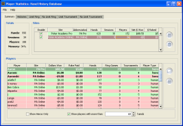
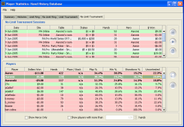

All hands played in Poker Academy are stored in a Hand History Database. The main Player Statistics window provides access to all of the hand history and player analysis tools. This module lets you view hand histories, import hands, track your session performance, view summarized reports on all of the players you've faced, and dive into specific player statistics such as bankroll graphs, action frequencies, and more.
The Player Statistics module contains three types of windows. The Hand History Database contains summary information on all of the players and sessions. Hand History Browsers display the actual hands from a session. Player Stats Windows can be loaded for each player you have played a hand with. Individual player stats windows contain information specific to that player.
| The Player Stats button will bring up a new Player Statistics Windows containing detailed statistics on the selected player. | |
|
|
The Hand History button will bring up a Hand History Browser showing only the selected hands. |
|
|
The Playback button loads the selected hands into the game window for play back and review. |
|
|
Permanently deletes all of the selected hands or sessions from the database. |
|
|
Export transcripts of the selected hands or sessions to a text file. |
|
|
Import Hands Histories from Online Poker Sites from a text file or directory. |
| Opens a specific help page in this help browser. |
Totals for all of the different Sites found in the database are displayed in the table at the top. Currently only two sites are supported. Poker Academy Pro is the site under which all local games are played. Poker Academy Online is used for all hands played on our online servers. In the future, we will support importing of hand histories from other poker sites. All players in the database are listed on the Players summary table. Heroes (your personal profiles) are shown in bold. A Show Heroes Only check box allows you to filter out all players that are not Heroes. Likewise, you can also filter out all players that have not played a significant number of hands. For each player, it lists:
| The Player Stats button will bring up a new window containing detailed statistics on that player. (See the section on Player Statistics Windows for more information). | |
|
|
The Hand History button will bring up a Hand History window showing only the hands where that player is listed. |

There are four tabs for each of the four game types (Limit Ring, No-Limit Ring, Limit Tournament, No-Limit Tournament). Each tab displays a list of the appropriate sessions at the top. The bottom half of the view contains a list of all players from the selected sessions. Sessions can be selected (control-click to select multiple sessions, or shift-click to select a range of continuous sessions). Clicking on any of the column titles will sort the table by that column. Clicking the same column title again will reverse the sorting order.